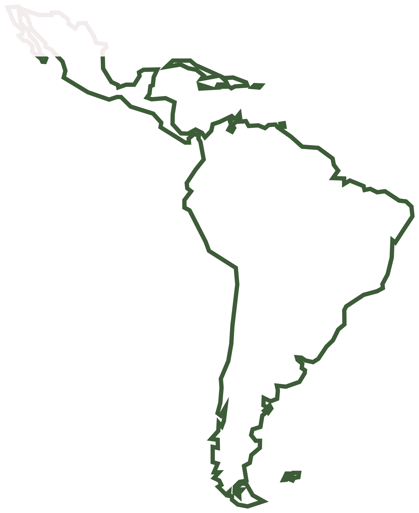

Fragmented ecosystems
Actors don't connect at scale. Weak community engagement and no trusted local networks.


Nodos Urbanos de América Latina
The infrastructure layer connecting capital, talent, knowledge and implementation across the cities of Latin America.
What is NODAL
NODAL is building the infrastructure layer that connects capital, talent, knowledge and implementation in urban development.
It is not just a platform. It is a system for activation, execution and coordination — starting in Latin America and scaling globally.
The problem
Actors don't connect at scale. Weak community engagement and no trusted local networks.
Limited access to relevant knowledge, opportunities and collaborators between actors.
Project delays, social conflict, inefficient deployment of capital, burnout and underused talent.
There is currently no system that connects actors effectively at scale while also supporting the people doing the work.
Market insight
Environmental engineers, sociologists, anthropologists, communicators and civic leaders remain highly distributed and disconnected. NODAL connects them.
The core idea
Every person and organisation is a node. Every trusted relationship is an edge. Together they form the graph of Latin American urbanism — and NODAL finds the connections that make projects happen.
Hover a node to trace its connections
We map the real local stakeholders — the vertices of the ecosystem.
AI-powered matching surfaces trusted, relevant connections between them.
Coordination, intelligence and community turn intention into implementation.
Your profile
Your NODAL profile is a living node in the network: your skills, the projects you work on, your city and your interests. Discover people and opportunities the way you'd expect — swipe, connect, collaborate.
Urban Mobility Researcher · Lima
Matches your project: BRT community engagement
Membership
Free
Membership
A Netflix of leaders
Traction
Become part of the infrastructure layer for urban collaboration.
Join NODAL